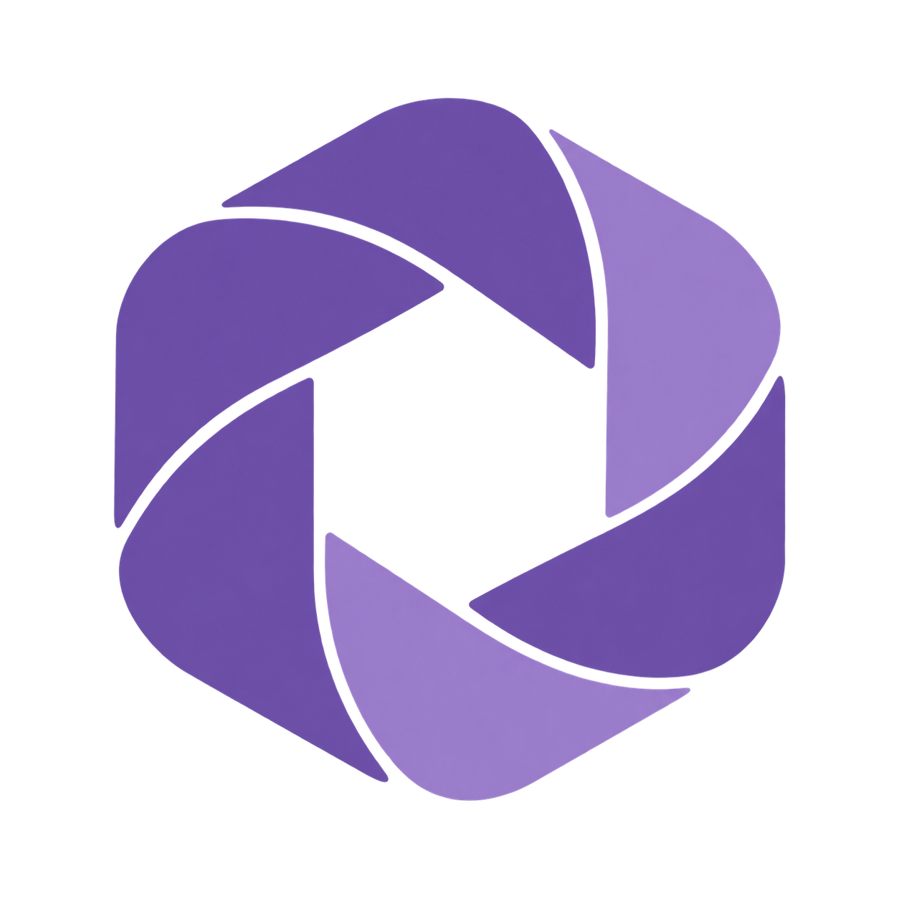

APERTURE
CPU MVP / Solana protocolБезопасный compute
для AI-агентов
Разрешение владельца, лимит расходов Solana и проверенные файлы результата.
Владелец
Разрешение и бюджет
AI-агент
План задания
Aperture
Выполнение CPU-задач
Результат
JSON и CSV с проверкой хэшей
Задача владельца
Делегирование вместо прямого скрипта
Скрипт в руках агента рискует бюджетом и сервером. Aperture связывает лимиты, журнал и файлы.
«Собери итоговый отчёт по моим CSV: уложись в лимит бюджета и заверши цепочку при сбоях»
Выход: сводный JSON и CSV
Данные вне контекста LLM
Файлы обрабатываются в изолированной среде, а не летят в промпт.
Потолок бюджета Solana
Hard cap расходов: агент не спишет больше разрешённого лимита.
Восстановление без доплат
Журнал шлюза продолжает шаги после сбоя без повторной оплаты.
Проверяемый результат
Файлы связаны с кодом и подписанной квитанцией.
Путь задания
Одна цепочка под контролем владельца
Код, входные файлы и лимиты связаны с конкретным разрешением.
- 01
Передать данные
Владелец загружает CSV и назначает ссылки выбранному агенту.
- 02
Одобрить план
Владелец проверяет шаги и общий потолок бюджета цепочки.
- 03
Выполнить шаги
Шлюз проверяет разрешения. Worker считает, журнал сохраняет прогресс.
- 04
Получить отчёт
Клиент проверяет подписи и хэши скачанных файлов.
Фактический платёж в OFF_CHAIN: 0.
Проверенный локальный сценарий
Отчёт готов. Повторных задач нет.
Прерывание после принятия задачи. Восстановление с прежним журналом.
синтетических строк
Включая прерывание и восстановление.
report.jsonСводка и качество данныхcategories.csvИтоги по категориямquality.csvПричины исключенийИтоговые файлы совпали байт в байт с прямым расчётом Python.
Авторизация и расчёты
Solana ограничивает затраты
Правила платежа хранятся в протоколе. Расчёт данных выполняется вне цепочки.
Правила на Solana
- Паспорт, срок действия и отзыв доступа.
- Резервирование бюджета и предел списания.
- Платёжный канал и квитанция расчёта.
Исполнение вне цепочки
- Gateway проверяет разрешение до запуска.
- CPU worker выполняет код и сохраняет файлы.
- SDK сверяет подписи и хэши результата.
Подписи подтверждают целостность и авторство квитанции, но не правильность удалённого вычисления.
Интеграция
19 инструментов для вашего агента
Модель остаётся в выбранном AI-хосте. Aperture предоставляет вычисления.
Вычисления и файлы
Загрузка входов, котировка и получение проверенных файлов.
Работа после перезапуска
История задач, подключение к принятым заданиям и восстановление цепочек.
Выбранный AI-хост
MCP предоставляет инструменты. Модель и ключ агента остаются в вашей среде.
# Настроены client, source и csv_input
quote = client.quote_job(
source, inputs=[csv_input],
max_cost_lamports=100_000,
max_runtime_seconds=60)
task = client.execute_job(
quote, source, inputs=[csv_input])
result = client.wait(task)
report = client.download_artifact(
task, result["receipt"], "report.json")Статус проекта
CPU MVP и следующие этапы
CPU-пайплайн
Console, gateway и worker.
SDK и 19 MCP-инструментов.
CSV-цепочки и восстановление.
Пилоты и проверка
Пилоты на реальных экспортах.
Проверка Docker и Devnet.
Контрактный аудит до Mainnet.
Новые исполнители
Независимые операторы.
GPU-задачи и инференс.
Mainnet после аудита.
Первый пилот: ваш CSV-отчёт через агента
Локальный запуск: start_preview.bat